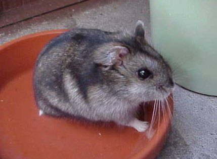
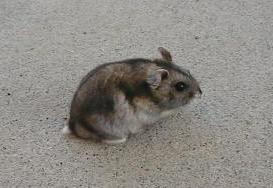
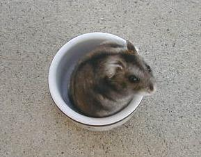
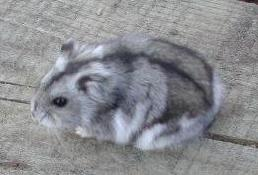
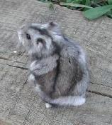
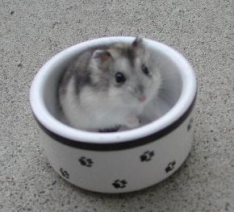
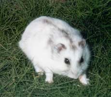

They do not breed in their winter coats nor can they be shown in their winter coats.
| Normal Winter White Dwarf Hamsters | ||||||||||||||||||||||||||||
|  | ||||||||||||||||||||||||||||
| These three pictures show Winter Whites in their normal summer coat. | ||||||||||||||||||||||||||||
|  |  | |||||||||||||||||||||||||||
|  | ||||||||||||||||||||||||||||
|  | ||||||||||||||||||||||||||||
| These four pictures show three Winter Whites changing from their summer to winter coats. They don't all change in this fashion. Many change from head to tail in waves. The first hint is usually in the eyebrows which lighten Often you can almost watch a line as it moves from their head across their back day by day with lighter color in front and darker in back. You can see such a line on the forehead of the above fellow although he is darker on the face and lighter by the ears. This process takes multiple weeks to fully occur and occurs progressively. The one to the right below shows his change in the face as well as in the belly. The one below to the left shows it clearly in his patchy face. | ||||||||||||||||||||||||||||
|  | ||||||||||||||||||||||||||||
|  | ||||||||||||||||||||||||||||
| This picture to the left is of a Winter White in his winter coat.This is as light as mine get. | ||||||||||||||||||||||||||||
| It is because of the color change process shown above that this species is called "Winter Whites." It usually takes mulitple weeks for them to get as light as the bottom picture and multiple weeks to turn back to their summer coat. The coat change is dependent on the hours of sunlight. They will even turn white in a warm summer if put in a dark place. They do not breed in their winter coats nor can they be shown in their winter coats. |
||||||||||||||||||||||||||||